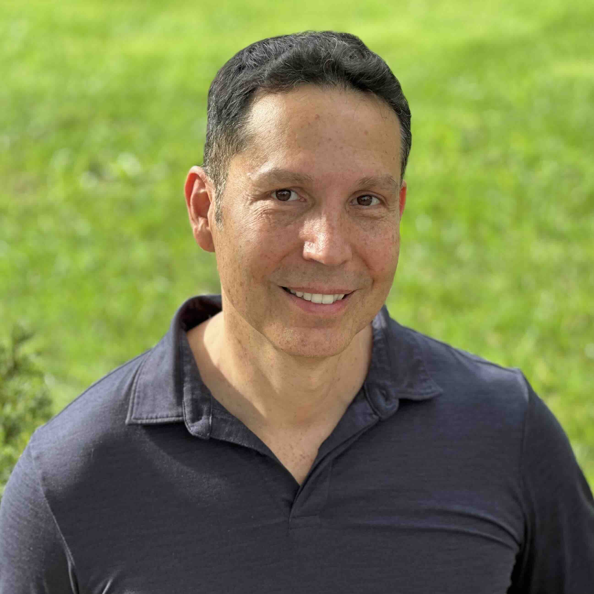

Alberto Rodriguez
Software Developer
Work Experience
Senior PeopleSoft Technical Consultant
Gideon Taylor | October 2022 - September 2023
- Built and implemented new PeopleSoft-based automation solutions for clients.
- Collaborated with process owners and project stakeholders to create and test new applications.
- Developed and deployed new features for eForms product.
- Applied PUM update retrofit for the client.
Salesforce Developer
Revolent Group | March 2022 - August 2022
- Paid Salesforce Development Training
- Certified Administrator, Platform Developer, OmniStudio Developer
Workday Integration Consultant
OneSource Virtual | June 2021 - October 2021
- Developed various custom Workday integrations between clients and their vendors.
- Configured many End-to-End connector integrations.
Workday Student Integration Consultant
Alchemy.us | February 2021 - June 2021
- Researched and resolved many Workday Student production support issues.
- Created various custom integrations with XSLT transformation.
Workday Manager
Alight Solutions | January 2019 - November 2019
- Designed and built various custom Enterprise Interface Builder integrations.
- Created numerous XSLT, calculated fields, and custom reports.
- Migrated integrations, custom reports, and calculated fields between tenants.
Senior PeopleSoft Technical Consultant/Team Lead
Accenture | September 2015 - January 2019
- Resolved bugs related to PeopleSoft links accessed from Salesforce.
- Developed new WSDLs based on newly created service operations.
- Created Component Interface API mapping with Request/Response XML tags for all methods.
- Tested all methods of newly created WSDLs via SoapUI.
- Converted data from Access Database to SQL Tables.
- Analyzed and resolved defects during the UAT phase.
- Completed off-hours dress rehearsal/go-live activities.
- Provided day-to-day HCM and FIN support and resolved Post-Upgrade technical issues.
- Coached and mentored junior developers.
- Worked with the business team and client resources directly to prototype
and create a sophisticated pension table adjustment functionality.
Senior PeopleSoft HCM Developer
Columbia University | January 2005 - August 2015
- Performance-tuned critical custom SQL resulting in the process running in 1/7th the time.
- Created a visionary solution to the delivered issue of YTD not existing on past ESS paychecks.
- Submitted ESS Paycheck YTD solution to Oracle Open World 2006 and gave a presentation.
- Retrofitted customizations when converting from DB2 to Oracle database.
- Solved many defects related to the October 2004 conversion to PeopleSoft HRMS 8.8.
- Implemented new customized functionality for the HR Application Upgrade to HCM 9.2.
- Developed complex TBH/SmartHire customizations using App Package PCode and Workflow.
- Configured delivered HCM message definitions to sync data with PeopleSoft Finance.
- Retrofitted customizations while upgrading from PeopleSoft 8.8 to 9.0.
- Converted several SQRs to Application Engine programs with Component Interfaces.
- Applied periodic tax updates as well as patches and fixes.
- Provided biweekly technical support for payroll calculations and payroll confirmations.
- Resolved issues as they arose during the HCM 9.2 upgrade system and integration testing.
- Created complicated XML Publisher customization where one of many letter templates is selected
and populated based on various data (letters are sent to employees and saved in PeopleSoft).